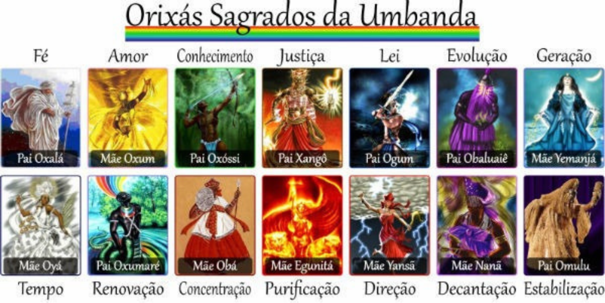
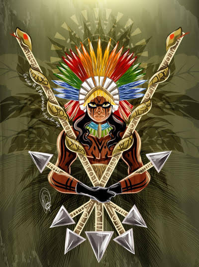
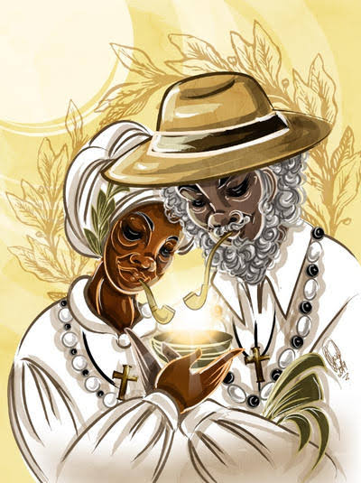
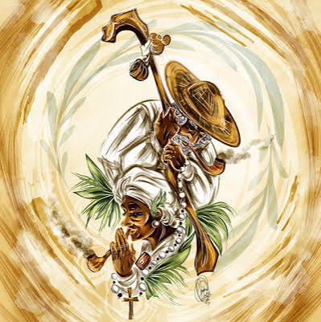
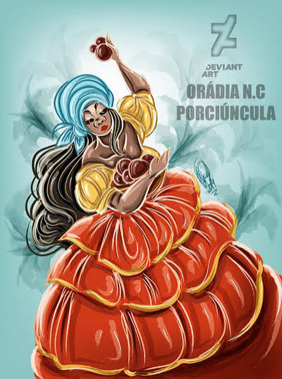
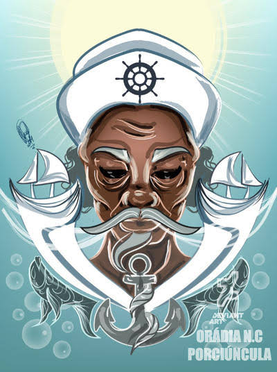
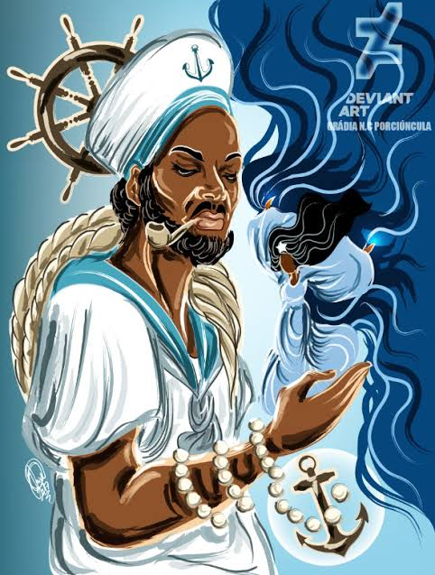
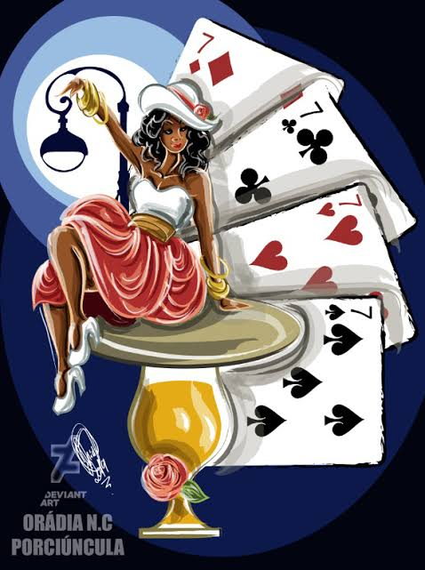
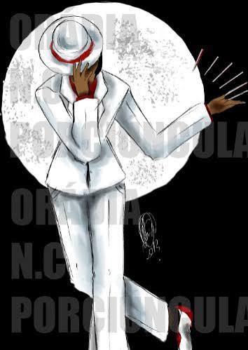
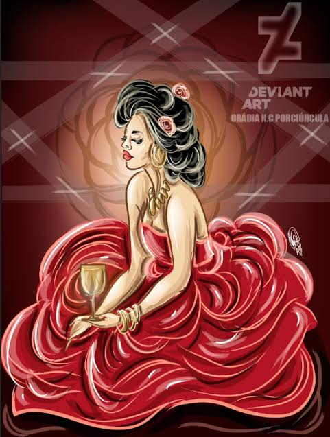

A Umbanda tem suas origens históricas ligadas aos subúrbios do Rio de Janeiro.
Em 15 de novembro de 1908, Zélio Fernandino de Moraes, nascido em São Gonçalo/RJ, teria incorporado o Caboclo das Sete Encruzilhadas. Este espírito o teria ajudado a criar a religião de Umbanda.
Rapidamente, ela se espalhou por todo Brasil e outros países da América Latina.
Suas crenças integram elementos do Candomblé, do Espiritismo Kardecista e do Catolicismo.
Por exemplo, dos cultos de origem africana, agregou as divindades chamadas Orixás e sua relação com as energias da natureza. De tradições indígenas, herdou o amor à natureza e o uso cerimonial de ervas de poder. Do Kardecismo, incorporou noções como a de "evolução espiritual" e "reencarnação".
Também tem Jesus como importante referência espiritual, sendo uma figura frequentemente reverenciada em altares.
Ao longo do tempo, a Umbanda se diversificou, apresentando uma certa autonomia e variação cerimonial entre as diferentes "Casas de Umbanda".

Na Umbanda, há dois tipos principais de guias espirituais que atuam para ajudar os praticantes: os Orixás e as Entidades.
Os Orixás são Divindades de origem africana associadas às forças da natureza. Cada Orixá possui características e histórias próprias, e alguns exemplos são: Oxalá, Xangô, Iemanjá, Ogum e Oxossi, Oxum, Iansã, Omulú e Nanã.
Já as Entidades são espíritos em evolução e que viveram na Terra entre os humanos. Na Umbanda, retornam como guias espirituais, auxiliando os praticantes em diversas áreas, como saúde, emoções, trabalho e proteção.









Há também outras entidades como os Boiadeiros, Ciganos, Orientais, etc.
Para exercer o trabalho espiritual, os responsáveis pela ligação entre o mundo espiritual e material, os médiuns, recebem (incorporaram) estas entidades e assim ajudam o consulente.